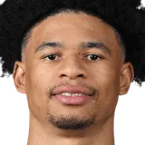

Played 2 seasons for 2 teams; his teams went 8–3 in his games.
Jump to: Record by opponent · Season by season · Teammate help
Compare Zyon Pullin with…
Final NBA finish, season by season
Title Finals Other playoffs Missed playoffs. #1 = champion; the dashed line is last place that season. Each point opens that season's final standings.
All 30 teams ranked in 2025-26, his best finish (#7)Teammate help
 Jaren Jackson Jr1.51 season
Jaren Jackson Jr1.51 season Rudy Gobert1.01 season
Rudy Gobert1.01 season Zach Edey0.21 season
Zach Edey0.21 season
Career
Career records (W–L, W − L, with and without) include 2026-27 games through Nov. 19, 2026; season counts and finishes are through 2025-26. Each card opens its board in the same scope. How we count.

Latest completed seasons
- 2025-26·
 Minnesota·#7 of 3049–33 · Lost in the conference semifinals 2–4 to
Minnesota·#7 of 3049–33 · Lost in the conference semifinals 2–4 to  San Antonio
San Antonio - 2024-25·
 Memphis·#12 of 3048–34 · Lost in the first round 0–4 to
Memphis·#12 of 3048–34 · Lost in the first round 0–4 to  Oklahoma City
Oklahoma City
2026-27 so far
Games through Nov. 19, 2026, the last game in the nightly data. These games are already in his career records above (W–L, win %, W − L, with and without, all marked "incl. 2026-27"). Season counts, final finishes and teammate help use completed seasons through 2025-26; 2026-27 joins them when the season ends.
| Team | His games | With him | Without him | Gap | On/off per 100 | Started / bench | Close games |
|---|---|---|---|---|---|---|---|
| 3 | 3–0 100.0% | 8–5 61.5% | +38.5 | −118.7 | N/A / 3–0 | N/A |
Season by season
Newest first; every header sorts. Final NBA finish is the team's rank among all teams that season (#1 = champion) and opens that season's standings. "Without him" uses the team-season window; the span line counts only the games between his first and last game for the team.
On/off, starts and close games
From the lineup data, 1996-97 on. On/off is net points per 100 possessions with him on the floor minus off, a different unit from the win-rate gaps. Started and off the bench are team records in those games; close games are those within 5 points in the last 5 minutes with him on the floor.
Teammate help by season
Two separate numbers per season, each with every teammate that adds to it. Help this season = Teammates Score points for honors won that season by teammates who shared a game with him. Help coming in = the same teammates' honors from the season before. How help works.
- 2026-27MinnesotaHelp this season: pending (honors are awarded after the season)
Help coming in (2025-26 honors of teammates he has played with so far): 2.5 = 1.5 Anthony Edwards + 1 Rudy Gobert
- 2025-26Minnesota
Rudy Gobert All-Def 1st14 g
Help this season: 1 = 1 Rudy Gobert
More: help coming in and other teammates
Help coming in (teammates' honors the season before): 0.5 = 0.5 Rudy Gobert
Other teammates (no honors that season): Joan Beringer 5 g, Jaylen Clark 5 g, Terrence Shannon 5 g, Donte DiVincenzo 5 g, Julius Randle 4 g, Kyle Anderson 4 g, Julian Phillips 4 g, Bones Hyland 4 g, Ayo Dosunmu 4 g, Mike Conley 3 g, Naz Reid 3 g, Joe Ingles 2 g, Enrique Freeman 2 g, Jaden McDaniels 2 g and 1 more
- 2024-25Memphis
Jaren Jackson Jr All-StarAll-Def 2nd1.53 gZach Edey All-Rookie 1st0.253 g
 Jaylen Wells All-Rookie 1st0.253 g
Jaylen Wells All-Rookie 1st0.253 g
Help this season: 2 = 1.5 Jaren Jackson Jr + 0.25 Zach Edey + 0.25 Jaylen Wells
More: help coming in and other teammates
Help coming in (teammates' honors the season before): 0.125 = 0.125 GG Jackson
Other teammates (no honors that season): GG Jackson 3 g, Jay Huff 3 g, Scotty Pippen Jr 3 g, Santiago Aldama 3 g, John Konchar 3 g, Luke Kennard 3 g, Yuki Kawamura 2 g, Desmond Bane 2 g, Brandon Clarke 2 g, Ja Morant 2 g, Vince Williams Jr 1 g, Jake LaRavia 1 g
Record against each opponent
Regular season, through 2025-26 (2026-27 games not included): 8 games, 5–3, against 8 franchises.
Grouped by franchise (named as today); game lists keep each team's name that season. Filters and the tab are kept in the URL, so a filtered view can be shared.
| Games list | |||||||
|---|---|---|---|---|---|---|---|
| 1 | 1–0 | 100.0% | +1 | N/A | 2025-26 | ||
| 1 | 0–1 | 0.0% | −1 | N/A | 2025-26 | ||
| 1 | 1–0 | 100.0% | +1 | N/A | 2025-26 | ||
| 1 | 0–1 | 0.0% | −1 | N/A | 2024-25 | ||
| 1 | 1–0 | 100.0% | +1 | N/A | 2025-26 | ||
| 1 | 0–1 | 0.0% | −1 | N/A | 2024-25 | ||
| 1 | 1–0 | 100.0% | +1 | N/A | 2024-25 | ||
| 1 | 1–0 | 100.0% | +1 | N/A | 2025-26 |
Rows add up to his career record in his games. A playoff series counts when he played in it; early round-robin games show as games only. How we count.
Arrival and departure
Team wins per 82 games the season before he arrived vs his first season there, and his last season vs the season after he left. He leaves a team only when his next season with games is for another team (or he never plays again); whole seasons he missed and came back from are one "Missed" row with the team's record without him. Per 82 so short seasons compare fairly. These are team records, not a measure of what he did.